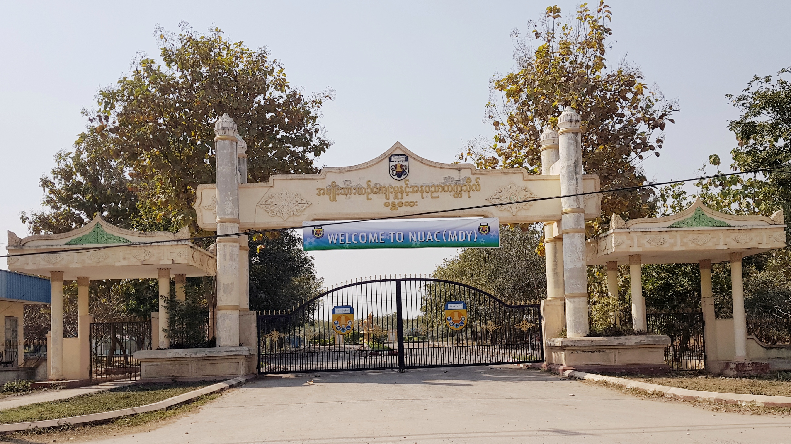

Explore Myanmar's Universities

Premier arts and cultural institution dedicated to producing skilled artists, performers, cultural researchers, and creative leaders in Upper Myanmar.
No Official Sites